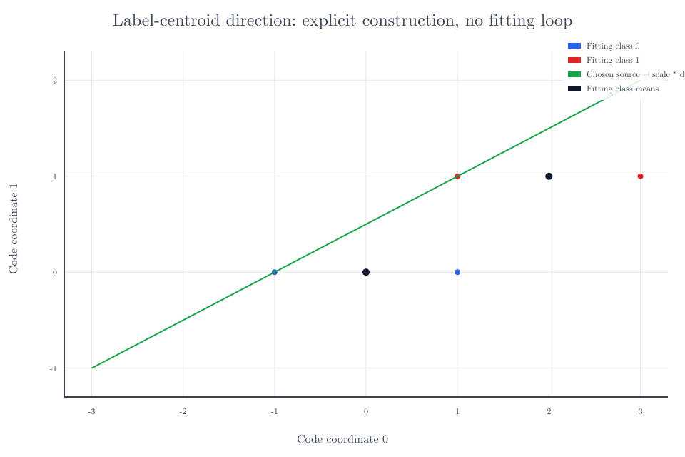
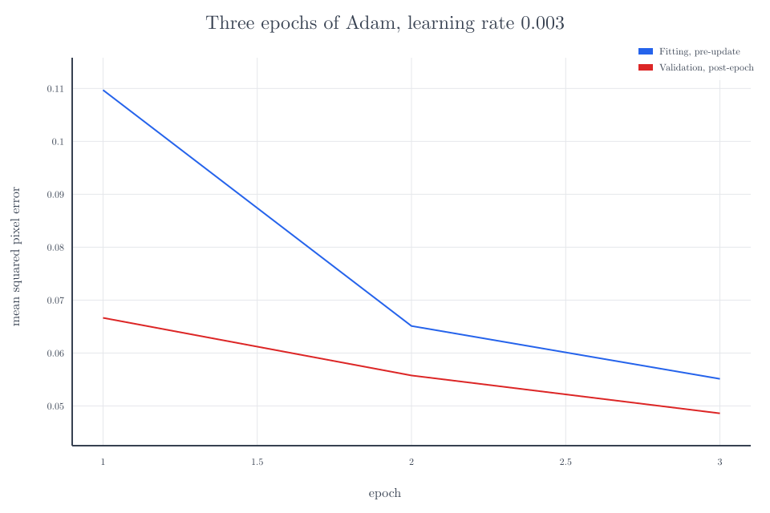
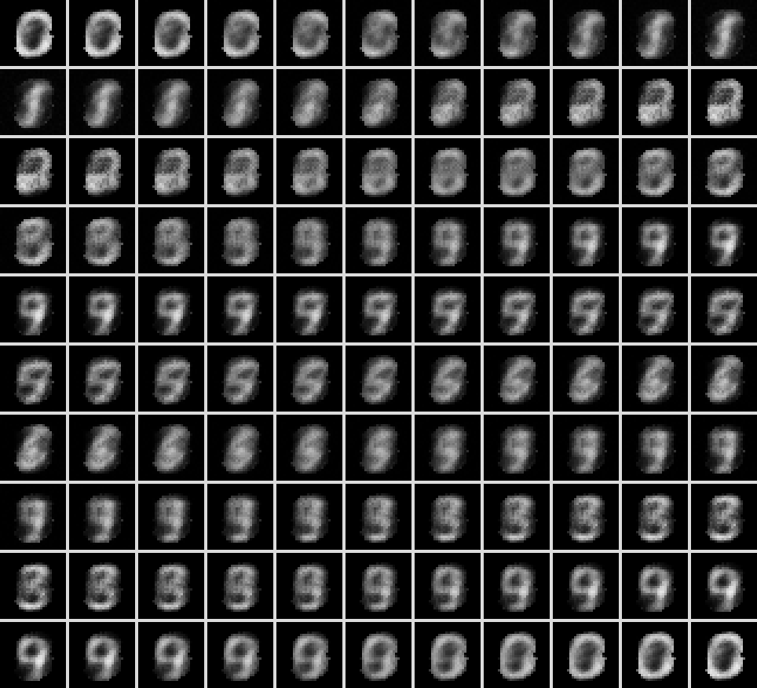
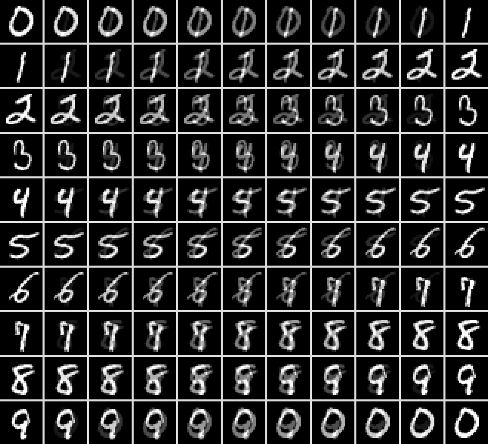
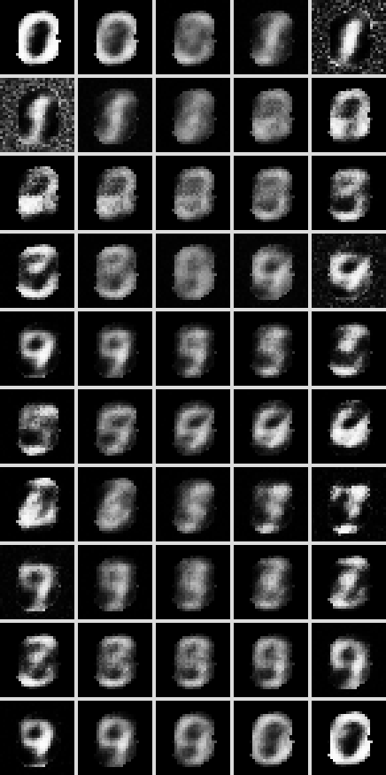
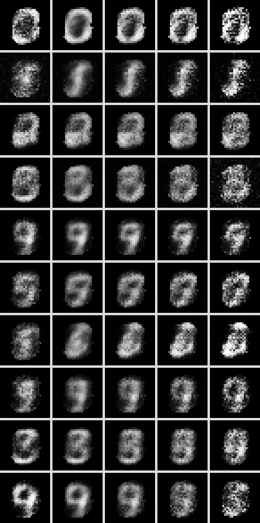
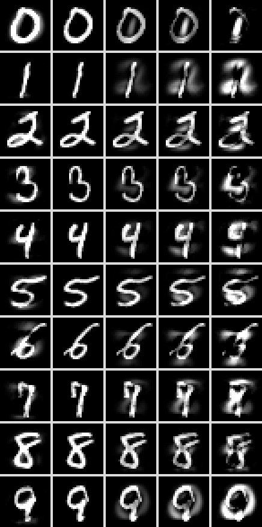
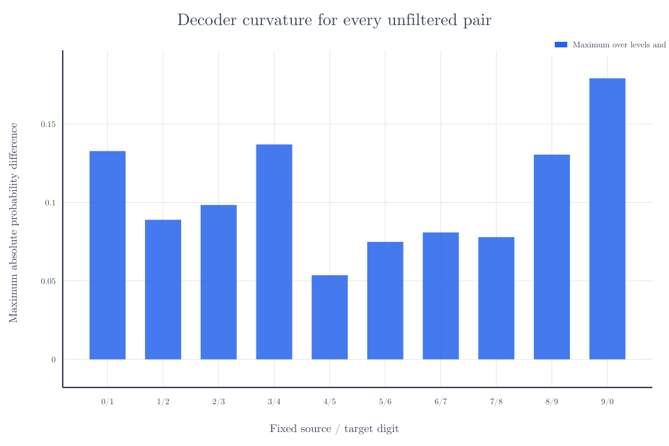

Latent Arithmetic: Explicit Paths Through a Frozen Decoder
Abstract
Interpolating codes and adding a class-mean difference are explicit numerical operations. This report applies them to a frozen 784–32–784 MNIST autoencoder, retaining every one of ten fixed source/target pairs. A visible prerequisite reproduces the original three-epoch model; the application makes zero new updates. Decoding a code interpolation differs from crossfading decoded endpoints, with maximum pixel difference 0.179131. Class directions use fitting labels and are compared with norm-matched random directions and pixel-mean edits. Negative edited codes, clipping counts, ambiguous outputs and all failures are retained. No semantic-transport or generative-prior claim follows from smooth probabilities.
Choose a path, then decode its codes
An autoencoder separates an image-to-code encoder from a code-to-reconstruction decoder, as described in [Goodfellow, Bengio and Courville, chapter 14](https://www.deeplearningbook.org/contents/autoencoders.html). Here the encoder is ReLU and the decoder is an untied sigmoid layer. Its 32-coordinate bottleneck is trained for reconstruction; an affine line through that space need not stay in a region visited during fitting. This experiment examines explicit paths and controls for one small model.
#include <dm/dm.hpp>
int main() {
std::filesystem::create_directories("build");
dm::graphics::Diagram d(39, 1100);
dm::graphics::DiagramNodeStyle st;
st.width = 5.8;
st.height = 2.6;
st.font_size = 18;
d.node("x", {0, 4}, "Fixed held-out images\nFirst digit d / first digit d+1", st)
.node("e", {8, 4}, "Frozen ReLU encoder\n784 -> 32", st)
.node("p", {16, 4}, "Explicit code paths\nInterpolation / affine edits", st)
.node("d", {24, 4}, "Frozen sigmoid decoder\nCodes only -> pixels", st)
.edge("x", "e")
.edge("e", "p")
.edge("p", "d")
.node("f", {8, -3}, "Fitting codes + labels\nPer-class code means", st)
.node("v", {16, -3}, "Chosen direction\nNext mean - source mean", st)
.edge("f", "v")
.edge("v", "p")
.text(
{12, -8},
"Class-mean edits use labels explicitly. Random directions match each code-space "
"norm.\nAll 50,992 model values remain bit-exact; the application has no optimizer.",
20)
.save_svg("build/latent_method.svg");
}
A nonlinear decoder makes the distinction visible
For scalar endpoints a=-1 and b=1, z(t)=(1-t)a+tb=2t-1. Choose decoder g(z)=[sigmoid(2z),sigmoid(-2z)]. At t=0.25, decoding z=-0.5 gives approximately [0.269,0.731]; crossfading the decoded endpoints gives [0.310,0.690]. Both share the endpoints, but the sigmoid curve and the pixel crossfade differ between them. At the midpoint, symmetry makes both equal [0.5,0.5]. Smooth numbers alone do not certify a meaningful image.
For S=sum_t z(t), dS/da=sum_t(1-t), dS/db=sum_t t and dS/dt=b-a. These paths are differentiated by the native API; no finite-difference substitute is used for the saved gradients. The original two-products-then-sum grouping is retained, including Float32 rounding.
#include <dm/dm.hpp>
int main() {
namespace n = dm::nn;
namespace m = n::models;
const auto type = n::DType::Float64;
std::filesystem::create_directories("build");
n::ParameterStore p(7, type);
const auto a = n::full({1, 1}, -1, type), b = n::full({1, 1}, 1, type),
alpha = n::linspace(0, 1, 21, type);
m::UndercompleteDecoder(p, n::zeros({1, 1}, type), 2, 1);
p.set("decoder/W", n::tensor({2., -2.}, {1, 2}, type));
p.set("decoder/b", n::zeros({2}, type));
const auto path = m::LatentLerp(a, b, alpha),
decoded = m::UndercompleteDecoder(p, m::LatentFlatten(path), 2, 1);
const auto ea = m::UndercompleteDecoder(p, a, 2, 1), eb = m::UndercompleteDecoder(p, b, 2, 1);
const auto crossfade = m::LatentFlatten(m::LatentLerp(ea, eb, alpha));
std::print(
"At t=.25: decoded {:.6f}; endpoint crossfade {:.6f}.\n",
decoded.at({5, 0}),
crossfade.at({5, 0}));
auto aa = a.clone().requires_grad_(), bb = b.clone().requires_grad_(),
tt = n::tensor({0., .5, 1.}, {3}, type).requires_grad_();
const auto g = n::grad(n::sum(m::LatentLerp(aa, bb, tt)), {aa, bb, tt});
if (g[0].item() != 1.5 || g[1].item() != 1.5 ||
g[2].to_vector<double>() != std::vector<double>(3, 2))
return 1;
auto plot = dm::graphics::RPlot::create();
plot.lines(
alpha.to_vector<double>(),
n::select(decoded, 1, 0).to_vector<double>(),
"Decode interpolated code",
{37, 99, 235},
2.)
.lines(
alpha.to_vector<double>(),
n::select(crossfade, 1, 0).to_vector<double>(),
"Crossfade decoded endpoints",
{220, 38, 38},
2.)
.x_label("Interpolation level t")
.y_label("First output probability")
.title("A sigmoid decoder curves away from the pixel crossfade")
.save_svg("build/latent_toy_decoder.svg");
}At t=.25: decoded 0.268941; endpoint crossfade 0.309601.

A class-mean edit is supervised posthoc arithmetic
For fitting codes [-1,0],[1,0] in class 0 and [1,1],[3,1] in class 1, the class means are [0,0] and [2,1]. Their difference is [2,1]. Editing source [-1,0] with scales [-1,0,0.5,1,2] gives [-3,-1],[-1,0],[0,0.5],[1,1],[3,2]. The operation does not learn a transformation or constrain an extrapolated code. Native centroids sum each coordinate in row-order double precision, divide by its class count, then cast once to the code dtype. The result is detached; every configured class must have fitting rows.
#include <dm/dm.hpp>
int main() {
namespace n = dm::nn;
const auto type = n::DType::Float64;
const auto fit = n::tensor({-1., 0., 1., 0., 1., 1., 3., 1.}, {4, 2}, type),
labels = n::from_vector(std::vector<int>{0, 0, 1, 1});
const auto means = n::models::LatentClassMeans(fit, labels, 2);
const auto direction = n::take_rows(means, {1}) - n::take_rows(means, {0});
const auto edited = n::models::LatentFlatten(
n::models::LatentDirection(
n::take_rows(fit, {0}), direction, n::tensor({-1., 0., .5, 1., 2.}, {5}, type)));
std::print(
"Direction [{:.0f},{:.0f}]; negative and extrapolated codes are retained.\n",
direction.at({0, 0}),
direction.at({0, 1}));
auto plot = dm::graphics::RPlot::create();
plot.points({-1, 1}, {0, 0}, "Fitting class 0", {37, 99, 235}, 4.)
.points({1, 3}, {1, 1}, "Fitting class 1", {220, 38, 38}, 4.)
.lines(
n::select(edited, 1, 0).to_vector<double>(),
n::select(edited, 1, 1).to_vector<double>(),
"Chosen source + scale * direction",
{22, 163, 74},
2.)
.points({0, 2}, {0, 1}, "Fitting class means", {15, 23, 42}, 5.)
.x_label("Code coordinate 0")
.y_label("Code coordinate 1")
.title("Label-centroid direction: explicit construction, no fitting loop")
.save_svg("build/latent_toy_direction.svg");
}Direction [2,1]; negative and extrapolated codes are retained.

Reproduce the frozen model before the application
Native MNIST preparation provides 1,000 fitting, 200 validation and 200 held-out test images, balanced across ten digits with disjoint original IDs. Test IDs come from the official test split. The complete prerequisite below shows all three epochs / 96 Adam updates, with validation reconstruction MSE selecting the checkpoint. Classification labels do not enter that fitting loss. Its initial and selected arrays reproduce the original prerequisite parameters exactly. Nothing is downloaded or trained by an external Python script, and no manually placed model is required. The latent-path application that follows adds zero optimizer updates.
#include <dm/dm.hpp>
int main() {
namespace n = dm::nn;
std::filesystem::create_directories("build");
const std::filesystem::path cache = dm::datasets::data_home();
dm::datasets::prepare_example_data("mnist-assets", cache.string());
const auto pools = n::models::LoadSaliency(cache / "saliency");
const auto fit = pools[0].images.reshape({1000, 784});
const auto validation = pools[1].images.reshape({200, 784});
const auto test = pools[2].images.reshape({200, 784});
n::ParameterStore p(1471);
{
n::NoGradGuard guard;
n::models::UndercompleteAutoencoder(p, n::zeros({1, 784}));
}
p.save("build/latent_initial_encoder.npz");
const auto initial_test = n::models::UndercompleteAutoencoder(p, test).reconstruction.detach();
const auto pixel_mean = n::mean(fit, {0}, true);
n::OptimizerConfig config;
config.kind = n::OptimizerKind::Adam;
n::Optimizer optimizer(p, .003, config);
n::BatchOrder batches(1000, 32, 1483);
const auto probe = n::take_rows(fit, {0, 1});
const auto first_gradients = n::grad(
n::mse(n::models::UndercompleteAutoencoder(p, probe).reconstruction, probe), p.parameters());
std::print("| parameter | initial gradient L2 norm |\n|---|---:|\n");
for (std::size_t i = 0; i < first_gradients.size(); ++i) {
const double norm = n::sqrt(n::sum(n::square(first_gradients[i]))).item();
if (!std::isfinite(norm) || norm <= 0)
return 1;
std::print("| {} | {:.7f} |\n", p.names()[i], norm);
}
double best = std::numeric_limits<double>::infinity();
int selected = 0;
std::vector<double> epochs, training, valid;
std::print("\n| epoch | fitting pre-update MSE | validation MSE |\n|---:|---:|---:|\n");
for (int epoch = 1; epoch <= 3; ++epoch) {
batches.begin_epoch();
double total = 0;
std::size_t seen = 0;
for (;;) {
const auto rows = batches.next();
if (rows.empty())
break;
const auto input = n::take_rows(fit, rows);
const auto output = n::models::UndercompleteAutoencoder(p, input);
const auto objective = n::mse(output.reconstruction, input);
const double value = objective.item();
if (!std::isfinite(value))
return 1;
total += value * rows.size();
seen += rows.size();
optimizer.minimize(objective);
}
n::NoGradGuard guard;
const double score =
n::mse(n::models::UndercompleteAutoencoder(p, validation).reconstruction, validation)
.item();
if (seen != 1000 || !std::isfinite(score))
return 1;
if (score < best) {
best = score;
selected = epoch;
p.save("build/latent_selected_encoder.npz");
}
epochs.push_back(epoch);
training.push_back(total / seen);
valid.push_back(score);
std::print("| {} | {:.9f} | {:.9f} |\n", epoch, total / seen, score);
}
p.load("build/latent_selected_encoder.npz");
n::NoGradGuard guard;
const auto output = n::models::UndercompleteAutoencoder(p, test);
const auto zero_code = n::broadcast_to(n::sigmoid(p.at("decoder/b")), test.shape());
std::vector<std::int64_t> shifted;
for (int i = 0; i < 200; ++i)
shifted.push_back((i + 1) % 200);
const auto shuffled = n::sigmoid(
n::matmul(n::take_rows(output.code, shifted), p.at("decoder/W")) + p.at("decoder/b"));
const std::vector<std::pair<std::string, n::Tensor>> predictions{
{"initial network", initial_test},
{"black", n::zeros_like(test)},
{"fitting pixel mean", n::broadcast_to(pixel_mean, test.shape())},
{"selected autoencoder", output.reconstruction},
{"zero code", zero_code},
{"cyclically shuffled codes", shuffled}};
std::print(
"\nSelected epoch: {}. Validation MSE: {:.9f}.\n\n| held-out predictor | MSE over 200 images "
"|\n|---|---:|\n",
selected,
best);
for (const auto& [name, prediction] : predictions)
std::print("| {} | {:.9f} |\n", name, n::mse(prediction, test).item());
n::save_npz(
"build/latent_prerequisite_results.npz",
{{"test_input", test},
{"test_reconstruction", output.reconstruction},
{"test_code", output.code},
{"test_labels", pools[2].labels},
{"test_ids", pools[2].source},
{"fit_ids", pools[0].source},
{"validation_ids", pools[1].source},
{"pixel_mean", pixel_mean},
{"initial_test", initial_test},
{"shuffled_test", shuffled}});
auto plot = dm::graphics::RPlot::create();
plot.lines(epochs, training, "Fitting, pre-update", {37, 99, 235}, 2.)
.lines(epochs, valid, "Validation, post-epoch", {220, 38, 38}, 2.)
.x_label("epoch")
.y_label("mean squared pixel error")
.title("Three epochs of Adam, learning rate 0.003")
.save_svg("build/latent_prerequisite.svg");
}| parameter | initial gradient L2 norm |
|---|---|
| encoder/W | 0.0206432 |
| encoder/b | 0.0018561 |
| decoder/W | 0.0203198 |
| decoder/b | 0.0076418 |
| epoch | fitting pre-update MSE | validation MSE |
|---|---|---|
| 1 | 0.109698705 | 0.066644996 |
| 2 | 0.065107134 | 0.055756476 |
| 3 | 0.055117222 | 0.048601795 |
Selected epoch: 3. Validation MSE: 0.048601795.
| held-out predictor | MSE over 200 images |
|---|---|
| initial network | 0.232573360 |
| black | 0.115653820 |
| fitting pixel mean | 0.067798078 |
| selected autoencoder | 0.050325811 |
| zero code | 0.220418379 |
| cyclically shuffled codes | 0.068210378 |

Retain every source case and numerical control
The next program restores the selected model and checks all 50,992 values for bitwise immutability. For each digit d, it selects the first held-out d and the first held-out (d+1) mod 10. Selection depends on labels and source order, never output quality. Eleven interpolation levels are [0,0.1,...,1]. Five edit scales are [-1,0,0.5,1,2]. The next-class code-mean difference uses all fitting codes and fitting labels only. The random control uses explicit Gaussian seed 4309, matching each direction's code-space Euclidean norm in double before casting to Float32.
Code interpolation is compared with an original-image pixel crossfade and a decoded-endpoint crossfade. A separate pixel-arithmetic control adds the fitting pixel-mean class difference and clips to [0,1]; only that baseline clips values. Code edits retain all negative coordinates and are not projected back into the ReLU encoder's nonnegative range. Saved Float64 reverse-mode derivatives cover both endpoints and all eleven levels. All original numeric fields, provenance and diagnostic JSON values are retained.
#include <dm/dm.hpp>
namespace n = dm::nn;
namespace m = n::models;
void Require(bool condition, const std::string& message) {
if (!condition)
throw std::runtime_error(message);
}
int main() {
const std::filesystem::path cache = dm::datasets::data_home(), root = "build/latent";
std::filesystem::create_directories(root);
dm::datasets::prepare_example_data("mnist-assets", cache.string());
const auto pools = m::LoadSaliency(cache / "saliency");
n::ParameterStore p(1471);
{
n::NoGradGuard guard;
m::UndercompleteAutoencoder(p, n::zeros({1, 784}));
}
p.load("build/latent_selected_encoder.npz");
n::NamedTensors before;
for (const auto& name : p.names())
before.emplace_back(name, p.at(name).detach().clone());
n::Tensor fit_code, test_code;
{
n::NoGradGuard guard;
fit_code = m::UndercompleteAutoencoder(p, pools[0].images.reshape({1000, 784})).code;
test_code = m::UndercompleteAutoencoder(p, pools[2].images.reshape({200, 784})).code;
}
const auto means = m::LatentClassMeans(fit_code, pools[0].labels),
pixel_means =
m::LatentClassMeans(pools[0].images.reshape({1000, 784}), pools[0].labels);
const auto labels = pools[2].labels.to_vector<int>(), ids = pools[2].source.to_vector<int>();
std::vector<std::int64_t> rows, targets, next;
std::vector<int> source_ids, target_ids;
for (int digit = 0; digit < 10; ++digit) {
const auto a = std::find(labels.begin(), labels.end(), digit) - labels.begin(),
b = std::find(labels.begin(), labels.end(), (digit + 1) % 10) - labels.begin();
Require(a < 200 && b < 200, "Every fixed endpoint class must exist");
rows.push_back(a);
targets.push_back(b);
source_ids.push_back(ids[a]);
target_ids.push_back(ids[b]);
next.push_back((digit + 1) % 10);
}
const auto A = n::take_rows(test_code, rows), B = n::take_rows(test_code, targets);
const auto T = n::tensor({0., .1, .2, .3, .4, .5, .6, .7, .8, .9, 1.}),
L = n::tensor({-1., 0., .5, 1., 2.});
const auto directions = n::take_rows(means, next) - means,
standard = m::GaussianNoise({10, 32}, 1, 4309);
const auto direction64 = n::cast(directions, n::DType::Float64), z = standard.reshape({10, 32});
const auto length = n::sum(n::square(direction64), {1}, true),
norm = n::sum(n::square(z), {1}, true);
Require(
n::all(n::greater(length, 0)).item() && n::all(n::greater(norm, 0)).item(),
"Norm matching requires nonzero vectors");
const auto random = n::cast(z * n::sqrt(length / norm), n::DType::Float32);
n::Tensor interpolation, reverse, constant, arithmetic, random_path;
{
n::NoGradGuard guard;
interpolation = m::LatentLerp(A, B, T);
reverse = m::LatentLerp(B, A, T);
constant = m::LatentLerp(A, A, T);
arithmetic = m::LatentDirection(A, directions, L);
random_path = m::LatentDirection(A, random, L);
}
auto A64 = n::cast(A, n::DType::Float64).requires_grad_(),
B64 = n::cast(B, n::DType::Float64).requires_grad_(),
T64 = n::cast(T, n::DType::Float64).requires_grad_();
const auto gradients = n::grad(n::sum(m::LatentLerp(A64, B64, T64)), {A64, B64, T64});
Require(
n::equal_bits(n::select(interpolation, 1, 0), A) &&
n::equal_bits(n::select(interpolation, 1, 10), B),
"Original interpolation endpoints must be exact");
Require(
n::equal_bits(n::select(arithmetic, 1, 1), A), "Zero-scale edit must preserve source codes");
const auto reversal_error = n::max(
n::abs(
n::cast(interpolation, n::DType::Float64) -
n::cast(n::reverse(reverse, {1}), n::DType::Float64)))
.item();
Require(reversal_error < 3e-6, "Reverse paths must agree within Float32 level rounding");
Require(
n::max(n::abs(constant - n::expand_dims(A, 1))).item() < 1e-6,
"Equal-code paths must remain constant within rounding");
for (int j = 0; j < 2; ++j)
Require(
n::max(n::abs(gradients[j] - 5.5)).item() < 1e-6,
"Both endpoint derivative sums must agree");
auto Decode = [&](const n::Tensor& code) {
n::NoGradGuard guard;
return m::UndercompleteDecoder(p, code);
};
const auto interpolated = Decode(m::LatentFlatten(interpolation)),
arithmetic_images = Decode(m::LatentFlatten(arithmetic)),
random_images = Decode(m::LatentFlatten(random_path)), endpoint_a = Decode(A),
endpoint_b = Decode(B);
const auto pixels = pools[2].images.reshape({200, 784}),
source_pixels = n::take_rows(pixels, rows),
target_pixels = n::take_rows(pixels, targets);
const auto pixel_blends = m::LatentFlatten(m::LatentLerp(source_pixels, target_pixels, T)),
decoder_blends = m::LatentFlatten(m::LatentLerp(endpoint_a, endpoint_b, T));
const auto pixel_raw =
m::LatentDirection(source_pixels, n::take_rows(pixel_means, next) - pixel_means, L);
const auto pixel_arithmetic = m::LatentFlatten(n::clip(pixel_raw, 0., 1.));
const auto nonlinearity = n::max(
n::abs(
n::cast(interpolated, n::DType::Float64) -
n::cast(decoder_blends, n::DType::Float64)))
.item();
const auto negative = n::count_nonzero(n::less(arithmetic, 0.)).item<std::int64_t>();
const auto clipped =
n::count_nonzero(n::logical_or(n::less(pixel_raw, 0.), n::greater(pixel_raw, 1.)))
.item<std::int64_t>();
Require(
nonlinearity > 1e-3,
"The sigmoid decoder must distinguish code paths from endpoint crossfades");
Require(
n::max(n::abs(n::select(interpolated.reshape({10, 11, 784}), 1, 0) - endpoint_a)).item() <
2e-6,
"Left decoded endpoint must retain batch parity");
Require(
n::max(n::abs(n::select(interpolated.reshape({10, 11, 784}), 1, 10) - endpoint_b)).item() <
2e-6,
"Right decoded endpoint must retain batch parity");
for (const auto& [name, value] : before)
Require(n::equal_bits(value, p.at(name)), "Every frozen model array must remain unchanged");
std::map<std::string, n::Tensor> arrays{
{"fit_images", pools[0].images},
{"fit_labels", pools[0].labels},
{"fit_source_ids", pools[0].source},
{"test_images", pools[2].images},
{"test_labels", pools[2].labels},
{"test_source_ids", pools[2].source},
{"fit_code", fit_code},
{"test_code", test_code},
{"fit_class_code_means", means},
{"fit_class_pixel_means", pixel_means},
{"selected_test_rows", n::cast(n::from_vector(rows), n::DType::Int32)},
{"source_ids", n::from_vector(source_ids)},
{"target_ids", n::from_vector(target_ids)},
{"a", A},
{"b", B},
{"directions", directions},
{"random_directions", random},
{"random_standard", standard},
{"alpha", T},
{"levels", L},
{"interpolated_codes", interpolation},
{"reverse_codes", reverse},
{"constant_codes", constant},
{"arithmetic_codes", arithmetic},
{"random_codes", random_path},
{"gradient_a", gradients[0]},
{"gradient_b", gradients[1]},
{"gradient_alpha", gradients[2]},
{"interpolated_images", interpolated},
{"arithmetic_images", arithmetic_images},
{"random_images", random_images},
{"pixel_blends", pixel_blends},
{"decoder_endpoint_blends", decoder_blends},
{"pixel_arithmetic_clipped", pixel_arithmetic},
{"endpoint_a", endpoint_a},
{"endpoint_b", endpoint_b}};
n::save_npz((root / "analysis.npz").string(), n::NamedTensors(arrays.begin(), arrays.end()));
p.save((root / "model_arrays.npz").string());
std::filesystem::copy_file(
cache / "saliency/manifest.json",
root / "data_manifest.json",
std::filesystem::copy_options::overwrite_existing);
std::ofstream metadata(root / "metrics.json");
metadata.precision(17);
metadata
<< "{\"additional_training_updates\":0,\"parameters\":50992,\"pairs\":10,\"interpolation_"
"steps\":11,\"arithmetic_steps\":5,\"decoder_nonlinearity_max_difference\":"
<< nonlinearity << ",\"reverse_code_max_error\":" << reversal_error
<< ",\"negative_arithmetic_code_entries\":" << negative
<< ",\"pixel_arithmetic_clipped_entries\":" << clipped << "}\n";
Require(bool(metadata), "Metrics must be saved completely");
std::print(
"| frozen-application check | measured value |\n|---|---:|\n| additional updates | 0 |\n| "
"model parameters | {} |\n| fixed source/target pairs | 10 |\n| maximum decoder nonlinearity "
"| {:.9f} |\n| maximum reverse-path error | {:.9g} |\n| negative edited code entries | {} "
"|\n| pixel-baseline entries clipped | {} |\n",
p.count(),
nonlinearity,
reversal_error,
negative,
clipped);
std::print("\n| source digit | source ID | next-class target ID |\n|---:|---:|---:|\n");
for (int digit = 0; digit < 10; ++digit)
std::print("| {} | {} | {} |\n", digit, source_ids[digit], target_ids[digit]);
}| frozen-application check | measured value |
|---|---|
| additional updates | 0 |
| model parameters | 50992 |
| fixed source/target pairs | 10 |
| maximum decoder nonlinearity | 0.179130703 |
| maximum reverse-path error | 4.76837158e-07 |
| negative edited code entries | 89 |
| pixel-baseline entries clipped | 8587 |
| source digit | source ID | next-class target ID |
|---|---|---|
| 0 | 66921 | 63380 |
| 1 | 63380 | 68936 |
| 2 | 68936 | 62280 |
| 3 | 62280 | 62094 |
| 4 | 62094 | 65222 |
| 5 | 65222 | 61209 |
| 6 | 61209 | 61721 |
| 7 | 61721 | 69402 |
| 8 | 69402 | 62570 |
| 9 | 62570 | 66921 |
Interpolation: all ten pairs, with pixel crossfades beside the comparison
Rows correspond to source digits 0–9, with targets 1–9 then 0. Columns run from t=0 to t=1. The first grid decodes the affine code path. Its endpoint columns reconstruct the selected images; they are not claimed to equal the original pixels. The second grid crossfades those original source/target pixels and is a baseline with a different geometry. Both grids keep every pair, including blurred or ambiguous outputs. All five grids use the same fixed [0,1] display scale, threefold integer enlargement and gray gaps.
#include <dm/dm.hpp>
int main() {
namespace n = dm::nn;
std::map<std::string, n::Tensor> arrays;
for (const auto& [key, value] : n::load_npz("build/latent/analysis.npz"))
arrays.emplace(key, value);
const auto values = arrays.at("interpolated_images"),
images = n::tile(values.reshape({values.size(0), 28, 28, 1}), {1, 1, 1, 3});
n::save_image_grid(images, "build/latent_latent_interpolations.png", 11, 0, 1, 4, 220. / 255., 3);
std::filesystem::copy_file(
"build/latent_latent_interpolations.png",
"build/latent/latent_interpolations.png",
std::filesystem::copy_options::overwrite_existing);
}
#include <dm/dm.hpp>
int main() {
namespace n = dm::nn;
std::map<std::string, n::Tensor> arrays;
for (const auto& [key, value] : n::load_npz("build/latent/analysis.npz"))
arrays.emplace(key, value);
const auto values = arrays.at("pixel_blends"),
images = n::tile(values.reshape({values.size(0), 28, 28, 1}), {1, 1, 1, 3});
n::save_image_grid(images, "build/latent_pixel_interpolations.png", 11, 0, 1, 4, 220. / 255., 3);
std::filesystem::copy_file(
"build/latent_pixel_interpolations.png",
"build/latent/pixel_interpolations.png",
std::filesystem::copy_options::overwrite_existing);
}
Label directions, norm-matched random directions and pixel-mean edits
These next three grids use the same first held-out source per digit and the same five scales. A visually changing image is not a target-class success metric. No classifier, fidelity score or human rating is supplied, so the figures support inspection of these particular edits only.
#include <dm/dm.hpp>
int main() {
namespace n = dm::nn;
std::map<std::string, n::Tensor> arrays;
for (const auto& [key, value] : n::load_npz("build/latent/analysis.npz"))
arrays.emplace(key, value);
const auto values = arrays.at("arithmetic_images"),
images = n::tile(values.reshape({values.size(0), 28, 28, 1}), {1, 1, 1, 3});
n::save_image_grid(images, "build/latent_latent_arithmetic.png", 5, 0, 1, 4, 220. / 255., 3);
std::filesystem::copy_file(
"build/latent_latent_arithmetic.png",
"build/latent/latent_arithmetic.png",
std::filesystem::copy_options::overwrite_existing);
}
#include <dm/dm.hpp>
int main() {
namespace n = dm::nn;
std::map<std::string, n::Tensor> arrays;
for (const auto& [key, value] : n::load_npz("build/latent/analysis.npz"))
arrays.emplace(key, value);
const auto values = arrays.at("random_images"),
images = n::tile(values.reshape({values.size(0), 28, 28, 1}), {1, 1, 1, 3});
n::save_image_grid(images, "build/latent_random_arithmetic.png", 5, 0, 1, 4, 220. / 255., 3);
std::filesystem::copy_file(
"build/latent_random_arithmetic.png",
"build/latent/random_arithmetic.png",
std::filesystem::copy_options::overwrite_existing);
}
#include <dm/dm.hpp>
int main() {
namespace n = dm::nn;
std::map<std::string, n::Tensor> arrays;
for (const auto& [key, value] : n::load_npz("build/latent/analysis.npz"))
arrays.emplace(key, value);
const auto values = arrays.at("pixel_arithmetic_clipped"),
images = n::tile(values.reshape({values.size(0), 28, 28, 1}), {1, 1, 1, 3});
n::save_image_grid(images, "build/latent_pixel_arithmetic.png", 5, 0, 1, 4, 220. / 255., 3);
std::filesystem::copy_file(
"build/latent_pixel_arithmetic.png",
"build/latent/pixel_arithmetic.png",
std::filesystem::copy_options::overwrite_existing);
}
Measure decoder curvature without naming semantic success
The maximum absolute difference between decoding interpolated codes and crossfading decoded endpoints is 0.179131 over these pairs. The chart retains each pair's maximum difference across all eleven levels and 784 pixels. This measures decoder nonlinearity for the selected paths, not image quality or target-digit validity. Reverse code paths agree within 4.77e-7 because Float32 interpolation levels are not exact decimal complements. Equal-code and zero-edit controls also pass. There are 89 negative edited-code entries; they remain in the saved arrays and decoder inputs. The pixel-mean control clips 8,587 entries and therefore answers a different question.
#include <dm/dm.hpp>
int main() {
namespace n = dm::nn;
std::map<std::string, n::Tensor> arrays;
for (const auto& [key, value] : n::load_npz("build/latent/analysis.npz"))
arrays.emplace(key, value);
const auto difference = n::abs(
n::cast(arrays.at("interpolated_images"), n::DType::Float64) -
n::cast(arrays.at("decoder_endpoint_blends"), n::DType::Float64))
.reshape({10, 11, 784});
const auto values = n::max(difference, {1, 2}).to_vector<double>();
std::vector<double> digits;
std::vector<std::string> labels;
std::print("| source / target | maximum absolute decoder-crossfade difference |\n|---|---:|\n");
for (int digit = 0; digit < 10; ++digit) {
digits.push_back(digit);
labels.push_back(std::to_string(digit) + "/" + std::to_string((digit + 1) % 10));
std::print("| {} | {:.9f} |\n", labels.back(), values[digit]);
}
auto plot = dm::graphics::RPlot::create();
plot.bars(digits, values, "Maximum over levels and pixels", dm::RGBA{37, 99, 235}, .65)
.x_ticks(digits, labels)
.x_label("Fixed source / target digit")
.y_label("Maximum absolute probability difference")
.title("Decoder curvature for every unfiltered pair")
.save_svg("build/latent_curvature.svg");
}| source / target | maximum absolute decoder-crossfade difference |
|---|---|
| 0/1 | 0.132741421 |
| 1/2 | 0.088947505 |
| 2/3 | 0.098381400 |
| 3/4 | 0.136967301 |
| 4/5 | 0.053636342 |
| 5/6 | 0.074868545 |
| 6/7 | 0.080890924 |
| 7/8 | 0.077909946 |
| 8/9 | 0.130503997 |
| 9/0 | 0.179130703 |

Scope and reproducibility
This is a posthoc analysis of one compact reconstruction model and one selected checkpoint. It does not impose a learned prior, discover independent semantic factors or establish successful class transport. Class directions explicitly use fitting labels, random directions provide a matched-norm control, and all original cases remain visible. The visible prerequisite shows the training cost; the frozen application changes no model values and makes zero new updates.
The optional independent NumPy oracle reads only the generated arrays. It verifies 13,760 affine path values exactly, 8,160 class-centroid values, all 651 saved path derivatives, 320 Gaussian values, both pixel controls, model immutability and 218,720 forward values. Maximum widened forward error is below 5e-6. This check does not prepare data or fit the model.
Reference
- Goodfellow, I., Bengio, Y. and Courville, A. (2016). Deep Learning, chapter 14, [Autoencoders](https://www.deeplearningbook.org/contents/autoencoders.html). The present ReLU/sigmoid architecture and affine edits are explicit teaching choices.